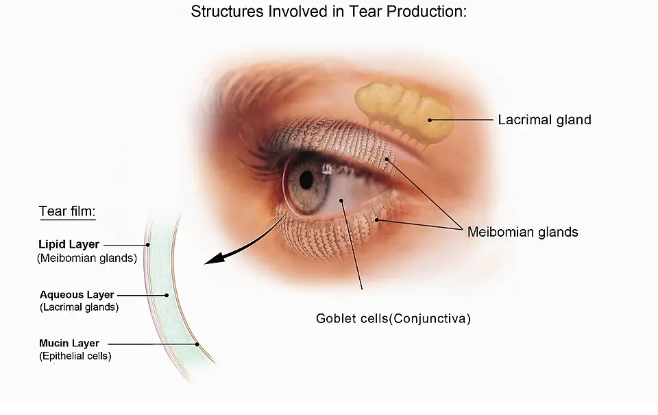
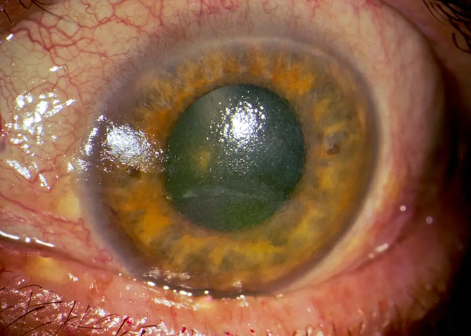

DX.1 — Sécheresse oculaire
La sécheresse oculaire est la cause fréquente d'un clignement excessif : elle brûle, fait larmoyer et trouble la vue, mais elle ne menace la cornée que dans ses formes sévèresS5. Le médecin écarte d'abord kératite, abrasion et dystonie médicamenteuse, puis confirme la maladie par un symptôme et un signe de surfaceS1S8.
1. Définition
La Tear Film & Ocular Surface Society (TFOS) a révisé sa définition en 2025, dans le troisième atelier international sur l'œil sec (Dry Eye Workshop, DEWS III)S1. Elle définit la sécheresse oculaire comme une maladie multifactorielle et symptomatique, caractérisée par une perte d'homéostasie du film lacrymal ou de la surface oculaireS1. Quatre facteurs étiologiques y participent : l'instabilité et l'hyperosmolarité du film, l'inflammation et la lésion de la surface, et des anomalies neurosensoriellesS1. TFOS précise qu'il s'agit d'une maladie et non d'un syndrome, et qu'elle est toujours symptomatiqueS1.
2. Épidémiologie (Suisse, puis Europe)
Le Service d'ophtalmologie des HUG (Hôpitaux universitaires de Genève) estime que l'œil sec concerne un peu moins d'un tiers de la population généraleS5. Il touche davantage les femmes et compte parmi les motifs de consultation ophtalmologique les plus fréquentsS5. La cohorte néerlandaise Lifelines retrouve une maladie chez 9,1 % de 79 866 adultes interrogés par questionnaire, ce qui montre l'effet du critère retenuS9. Les chiffres européens, le terrain à risque et le fardeau fonctionnel expliquent pourquoi ce diagnostic occupe le premier rang de la liste.
Chiffres utiles : Suisse, puis Europe
| Donnée | Valeur | Lieu et année | Source |
|---|---|---|---|
| Population générale, estimation des HUG | Un peu moins d'un tiers | Suisse, 2025 | S5 |
| Lifelines, 79 866 adultes de 20 à 94 ans, questionnaire de la Women's Health Study | 9,1 % | Pays-Bas, 2021 | S9 |
| Lifelines, 89 022 adultes, qualité de vie visuelle | Rapport de cotes 3,12 d'atteinte de la qualité de vie visuelle | Pays-Bas, 2021 | S10 |
| Huit pays européens, enquête en ligne | 6 084 adultes avec sécheresse déclarée ; fardeau comparable d'un pays à l'autre | Europe, 2023 | S12 |
| Méta-analyse de TFOS DEWS II | Hausse de 2,0 à 10,5 % par décennie selon le critère | International, 2017 | S4 |
La prévalence varie d'un facteur trois entre ces études, car un questionnaire strict compte moins de malades qu'une estimation clinique largeS5S9.
Qui est touché, et pourquoi
Dans Lifelines, les symptômes sont particulièrement fréquents entre 20 et 30 ans, ce qui contredit l'image d'une maladie réservée au sujet âgéS9. Les signes cliniques augmentent toutefois plus vite avec l'âge que les symptômes, selon la méta-analyse reprise par TFOSS4. Le sexe féminin, les lentilles de contact, la chirurgie oculaire, les connectivites, la maladie de Basedow et la rosacée y sont fortement associésS9.
TFOS DEWS III a classé la dysfonction des glandes de Meibomius comme facteur de risque constant et modifiable, ce qui en fait une cible de dépistage précoceS4. La maladie thyroïdienne, la sarcoïdose et les anticholinergiques sont passés au rang de facteurs constants en 2025S4.
Évolution et fardeau
L'œil sec ne tue pas ; ses formes sévères peuvent toutefois détériorer la cornée et menacer la vueS5. La maladie ne guérit pas complètement, mais le traitement atténue la gêne sans perte de vision dans la plupart des casS7. Dans Lifelines, la fraction de la gêne visuelle générale attribuable à l'œil sec dépasse celle des autres maladies oculaires étudiées, surtout chez les jeunesS10. Dans l'enquête européenne, la productivité au travail et la qualité de vie baissent à mesure que la sécheresse ressentie s'aggraveS12.
Dans le contexte du blépharospasme, la revue de Defazio rapporte des symptômes sensitifs oculaires chez 22 à 57 % des patients, la sécheresse étant le plus fréquentS13. Une étude japonaise citée par cette revue retrouve un blépharospasme chez 8,1 % des patients consultant pour sécheresse oculaireS13.
3. Physiopathologie
Le signe ne se comprend qu'après la base à connaître : un film lacrymal en trois couches, renouvelé par le clignement et produit par trois sources distinctesS5. Quand l'une des sources faiblit, le film se rompt entre deux clignements, s'évapore et se concentre ; l'hyperosmolarité qui en résulte agresse l'épithéliumS1S3. La cascade en quatre temps relie chaque lésion à son signe, et le tableau de corrélation relie chaque perturbation à son examen et à son traitement.
Base à connaître : le film lacrymal et ses trois sources
Les larmes contiennent des lipides, de l'eau et du mucus ; le clignement les répartit en un film qui garde la cornée humide et lisseS5. Le schéma du National Eye Institute montre la source de chaque couche et explique les trois mécanismes de la maladieS21.
Les trois sources du film lacrymal. Ce schéma du National Eye Institute montre l’œil gauche de face et une coupe du film lacrymal.

Le lecteur doit repérer d'abord seul la glande lacrymale, les glandes de Meibomius et la conjonctive sur l'image brute.
La copie annotée numérote les cinq repères que la lecture guidée explique.
- La glande lacrymale principale sécrète la couche aqueuse, qui porte l’eau, les électrolytes et les protéines.
- Les glandes de Meibomius s’ouvrent au bord libre des paupières et étalent la couche lipidique à chaque clignement.
- Les cellules caliciformes de la conjonctive fournissent le mucus qui accroche l’eau à l’épithélium.
- La couche lipidique externe freine l’évaporation : sa carence produit la forme évaporative.
- La couche aqueuse moyenne baisse dans le déficit lacrymal, par exemple au cours du syndrome de Sjögren.
- Le schéma sépare trois couches, alors que le film réel forme un gel continu dont les couches se mélangent.
- Les glandes de Meibomius bordent les deux paupières ; l’examen du bord libre porte donc aussi sur la paupière inférieure.
Ce que l'image décide. Le clinicien relie chaque plainte à une couche, puis il choisit le traitement qui restaure cette couche.
.jpg){kind=link}
Le déficit aqueux et la forme évaporative restent les deux pôles physiopathologiques ; la forme évaporative est la plus fréquente et s'accompagne d'une inflammation plus discrèteS3. La dysfonction des glandes de Meibomius en est le moteur principal, selon le résumé exécutif repris par BadianS4. Le clignement compte aussi, car TFOS range les anomalies du clignement et de la fermeture palpébrale parmi les causes propres de la maladieS1.
Cascade : amorce, développement, installation, maintien
- Amorce. Une glande produit moins, un clignement devient incomplet ou l'air sèche la surface ; le film se rompt alors avant le clignement suivantS1S5.
- Développement. L'eau s'évapore et l'osmolarité monte ; TFOS retient un seuil pathologique de 308 mOsm/LS1.
- Installation. L'hyperosmolarité lèse l'épithélium et entretient une inflammation de surface, que la fluorescéine révèle sous forme de points colorésS1S3.
- Maintien. Les nerfs cornéens sensibilisés entretiennent brûlure et douleur, ce qui explique une gêne parfois disproportionnée aux signesS1S13.
Cette cascade explique le larmoiement paradoxal : l'œil pleure pour compenser la sécheresse, mais le liquide réflexe ne corrige pas la qualité du filmS5. Elle explique aussi le clignement accru : chez le sujet prédisposé, l'irritation de surface augmente le clignement réflexe et peut déclencher un blépharospasmeS13.
Corrélation : perturbation, exploration, thérapeutique
| Perturbation | Exploration qui la montre | Thérapeutique qui la corrige (mécanisme) |
|---|---|---|
| Couche lipidique insuffisante (glandes de Meibomius) | Temps de rupture du film court ; inspection du bord libre | Compresses chaudes et massages des glandes S7 |
| Couche aqueuse insuffisante (glande lacrymale) | Test de Schirmer ; bilan de Sjögren si la clinique l'oriente S15S16 | Larmes artificielles sans conservateur ; bouchons lacrymaux si sévère S7 |
| Hyperosmolarité du film | Osmolarité ≥ 308 mOsm/L ou asymétrie > 8 mOsm/L S1 | Substituts lacrymaux qui restaurent le volume S2 |
| Lésion épithéliale | Fluorescéine : plus de 5 points cornéens S1 | Pommade réparatrice ; ciclosporine si kératite sévère S20S19 |
| Inflammation de surface | Coloration et rougeur ; réponse lente aux larmes seules | Ciclosporine ou corticoïde topique prescrits par l'ophtalmologue S7 |
| Clignement incomplet ou fermeture insuffisante | Inspection du clignement et de l'occlusion | Gel épais, exercices de clignement, tarsorraphie si nécessaire S17S7 |
4. Démarche diagnostique
Devant un clignement excessif ou une fermeture palpébrale, le médecin écarte d'abord les trois urgences de la liste avant de retenir la sécheresse, diagnostic fréquent mais d'exclusion des graves. La kératite aiguë (🚩 E1), le corps étranger ou l'abrasion (🚩 E2) et la dystonie médicamenteuse (🚩 E3) se reconnaissent par leur début brutal, leur douleur ou leur lien avec un médicament. Le tableau discriminant oppose ensuite la sécheresse aux diagnostics fréquents qui l'imitent ou l'accompagnent.
Diagnostics discriminants : ce qui tranche
| Diagnostic | Élément qui tranche | Piège | Conduite si positif |
|---|---|---|---|
| Kératite aiguë (DX.6, 🚩 E1) | Douleur intense, photophobie, baisse visuelle ; infiltrat à la lampe à fente | Prendre une kératite pour un œil sec chez un porteur de lentilles | Retrait des lentilles, ophtalmologue en urgence S8 |
| Corps étranger ou abrasion (DX.5, 🚩 E2) | Début brutal après une projection ou un traumatisme | Croire qu'une sensation de sable prouve un corps étranger | Éversion palpébrale à la recherche d'un corps étranger sous-tarsal S8 |
| Blépharite (DX.2) | Bord libre inflammatoire, croûtes, glandes obstruées | Traiter seulement par larmes sans soigner les paupières | Hygiène palpébrale ; larmes pour la sécheresse associée S8 |
| Blépharospasme essentiel (DX.8) | Spasmes bilatéraux persistants malgré une surface traitée ; geste antagoniste | Attribuer toute fermeture forcée à la sécheresse | Avis neurologique ; la sécheresse précède souvent la dystonie S13 |
La sécheresse et le blépharospasme coexistent souvent ; selon Defazio, les symptômes oculaires précèdent la dystonie de plusieurs mois ou années et résistent au traitement localS13. Un échec des larmes artificielles chez un patient qui ferme les yeux de force impose donc de chercher une dystonie plutôt que d'augmenter les gouttes.
5. Anamnèse ciblée et drapeaux rouges
L'entretien caractérise d'abord la brûlure ou sensation de sable, puis le larmoiement, la vision fluctuante et le clignement excessif, qui relient la plainte au film lacrymal. Il cherche ensuite la cause : environnement, médicaments, lentilles, chirurgie oculaire et maladies générales. Le questionnaire OSDI-6 (Ocular Surface Disease Index, six questions) dépiste la maladie lorsque son score atteint 4S1. Chaque drapeau rouge impose un examen spécialisé en urgence, car il évoque une atteinte qui menace la visionS8.
Brûlure, grain de sable, corps étranger : symptôme typique
La brûlure et la sensation de sable ou de corps étranger dominent la plainte ; elles s'aggravent avec le vent, la climatisation ou l'air chaud et secS5. Ce profil est typique, car l'évaporation dépend du milieu et de la durée d'exposition, ce qui explique l'aggravation au fil de l'expositionS5. Une douleur intense, unilatérale ou brutale n'est pas typique : elle oriente vers une kératite ou une lésion cornéenne et devient un drapeau rougeS8. La gêne ou la douleur à l'ouverture des yeux le matin fait aussi partie des symptômes typiques décrits par les HUGS5.
Larmoiement : symptôme paradoxal mais typique
Le patient sec peut se plaindre d'yeux qui coulent ; les HUG expliquent que l'œil pleure pour compenser la sécheresse, sans succès, car le liquide produit reste de mauvaise qualitéS5. Ce larmoiement est typique s'il survient par accès, déclenché par le vent ou l'écran, et s'il accompagne une brûlureS5.
Vision trouble ou fluctuante
La vue se trouble surtout à la lecture ou à l'écran ; ce symptôme est typique, car un film instable ne garde plus la cornée lisseS5. Une baisse de vision qui persiste après clignement n'est pas typique : elle constitue un drapeau rouge des HUG et impose l'examen spécialiséS8. Le gel ou la pommade trouble aussi la vue pendant quelques minutes, ce qui ne doit pas être confondu avec une aggravationS17S20.
Clignement excessif et fermeture palpébrale
La sécheresse augmente le clignement réflexe et peut provoquer une fermeture brève pour soulager la surface ; ce clignement cède quand la surface est traitéeS13. Des spasmes bilatéraux soutenus, déclenchés par la lumière et soulagés par un geste antagoniste, ne sont pas typiques : ils orientent vers le blépharospasmeS13. Le geste antagoniste, par exemple un léger toucher du visage, est efficace chez jusqu'à 70 % des patients atteints de blépharospasmeS13.
Médicaments à rechercher
Les HUG citent les traitements contre le rhume, les allergies et la douleur, les diurétiques, les antidépresseurs, les neuroleptiques, les somnifères, les bêtabloquants et les traitements hormonauxS5. TFOS compte parmi les facteurs constants les antihistaminiques, les antidépresseurs, les anxiolytiques, l'isotrétinoïne et les anticholinergiquesS4. Le rapport de 2025 ajoute le dupilumab, les antiandrogènes et les chimiothérapies aux facteurs nouvellement identifiésS4. Dans Lifelines, les inhibiteurs de la pompe à protons, les collyres antiglaucomateux et les anticholinergiques restent associés à la sécheresse après correction des comorbiditésS11.
Le médecin n'arrête jamais seul un traitement nécessaire ; il cherche avec le prescripteur un équivalent qui ne dessèche pas l'œilS7.
Maladies générales à rechercher
Une bouche sèche associée oriente vers un syndrome de Sjögren, maladie auto-immune des glandes lacrymales et salivaires qui expose aussi au lymphomeS15. La maladie thyroïdienne, la sarcoïdose, les connectivites, la rosacée et le diabète figurent parmi les facteurs de risque retenus par TFOS ou par LifelinesS4S9. La chirurgie de la cataracte et la chirurgie réfractive figurent parmi les facteurs fortement associés, ce qui impose de les rechercher à l'anamnèseS9S5.
Drapeaux rouges : signification et action
| Drapeau rouge | Signification | Action immédiate |
|---|---|---|
| Baisse de la vision ou vision floue persistante | Atteinte cornéenne ou autre maladie menaçant la vue | Examen ophtalmologique en urgence S8 |
| Douleur oculaire intense, photophobie, halos | Kératite, uvéite ou glaucome aigu | Examen ophtalmologique en urgence S8 |
| Porteur de lentilles de contact symptomatique | Kératite infectieuse d'évolution rapide | Retrait des lentilles, conservation dans l'étui, ophtalmologue en urgence S8 |
| Traumatisme, projection ou brûlure | Corps étranger, abrasion ou brûlure chimique | Rinçage si brûlure ; ophtalmologue en urgence S8 |
| Zona du territoire ophtalmique, immunosuppression | Atteinte cornéenne grave | Examen ophtalmologique en urgence S8 |
| Absence de réponse après 48 heures de traitement | Diagnostic erroné ou complication | Réévaluation spécialisée S8 |
| Fermeture palpébrale incomplète | Kératite d'exposition | Protection cornéenne et avis rapide S8S17 |
6. Examen physique ciblé, région par région
L'examen suit l'ordre du geste chez un patient sec. Il explore l'acuité, le clignement, le bord libre, la conjonctive, la cornée colorée, puis les signes généraux. Sans lampe à fente, l'examen du médecin de premier recours reste limité, et la palpation du tonus oculaire n'est pas recommandée car elle est peu fiableS8.
Région 1 — Acuité visuelle
Signe. L'acuité reste normale dans la sécheresse simple ; une baisse qui persiste après clignement signale une atteinte cornéenneS8S5.
Geste. Le médecin mesure chaque œil séparément, avec la correction habituelle, avant toute goutte ou tout colorant.
Aspect. Le médecin doit noter l'acuité avant tout gel, car le gel trouble la vision de façon passagèreS17.
Région 2 — Clignement et fermeture palpébrale
Signe. Un clignement incomplet ou une fermeture insuffisante laisse une bande de cornée exposée, ce qui produit une kératite d'expositionS1S8.
Geste. Le médecin observe le clignement spontané pendant l'entretien, puis demande une fermeture douce et vérifie que les bords se rejoignent.
Aspect. Un ectropion, paupière inférieure tournée vers l'extérieur, s'accompagne de larmoiement, de sécheresse et de kératite d'expositionS8. Des spasmes bilatéraux répétés et soutenus orientent vers une dystonie plutôt que vers un réflexe de surfaceS13.
Région 3 — Bord libre des paupières et glandes de Meibomius
Signe. Des orifices glandulaires obstrués, un bord épaissi et des croûtes signent une dysfonction meibomienne ou une blépharite, causes de la forme évaporativeS4S8.
Geste. Le médecin éclaire le bord libre en lumière rasante, puis il presse doucement la paupière pour faire sourdre le sébum.
Aspect. Un sébum clair est normal ; un sébum trouble ou pâteux, ou aucune sécrétion, signe la dysfonction glandulaire. Badian recommande d'évaluer les glandes même chez le sujet asymptomatique, car leur dysfonction infraclinique est fréquente avec l'âgeS4.
Région 4 — Conjonctive
Signe. La conjonctive peut être légèrement rouge ; une rougeur intense avec cercle périkératique évoque plutôt une kératiteS8.
Geste. Le médecin compare les deux yeux, puis il examine les culs-de-sac et pratique l'éversion palpébrale pour exclure un corps étranger sous-tarsalS8.
Aspect. Le vert de lissamine colore la conjonctive lésée ; TFOS retient plus de 9 points conjonctivaux comme signe de maladieS1.
Région 5 — Cornée à la fluorescéine
Signe. L'épithélium cornéen lésé fixe la fluorescéine en points verts sous lumière bleue ; TFOS retient plus de 5 points cornéensS1.
Geste. L'ophtalmologue instille la fluorescéine, mesure d'abord le temps de rupture du film, puis compte les points à la lampe à fenteS6S4.
Aspect. Des points fins et diffus s'accordent avec la sécheresse ; un infiltrat ou une ulcération oriente au contraire vers une kératiteS1S8. Le seuil de rupture passe de 10 à 5 secondes avec la fluorescéine, car le colorant déstabilise lui-même le filmS4.
Région 6 — Signes généraux
Signe. Une bouche sèche ou des arthralgies orientent vers un syndrome de SjögrenS15S16.
Geste. Le médecin inspecte la langue et la muqueuse buccale, puis il palpe les glandes salivaires et cherche une rosacée faciale ou des signes thyroïdiensS4.
Aspect. Une rosacée faciale oriente vers une atteinte associée des paupières ; TFOS la classe désormais parmi les facteurs modifiablesS4.
7. Approche syndromique
La sécheresse se présente sous quatre syndromes, que TFOS répartit entre déficits du film, anomalies palpébrales et anomalies de la surfaceS1. Le tableau des syndromes associe à chacun ses signes fonctionnels et physiques, et la définition des signes précise le geste et le mécanisme.
Syndromes 7.1 à 7.4
| Syndrome | Signes fonctionnels | Signes physiques |
|---|---|---|
| 7.1 Syndrome de déficit aqueux | Sécheresse oculaire et buccale si Sjögren S15 | Test de Schirmer abaissé S16 |
| 7.2 Syndrome évaporatif | Brûlure aggravée par l'écran, le vent et l'air sec S5 | Rupture rapide du film ; glandes de Meibomius obstruées S4S5 |
| 7.3 Syndrome d'exposition | Irritation et larmoiement S8 | Fermeture incomplète, ectropion ; kératite inférieure S8S17 |
| 7.4 Syndrome de surface avec clignement réflexe | Clignement excessif, photophobie, brûlure | Coloration de surface ; clignement qui cède après traitement S13 |
Définition, geste et mécanisme des signes
Temps de rupture du film. Il mesure en secondes l'intervalle entre un clignement et l'apparition d'une zone sèche ; il raccourcit quand la couche lipidique manqueS1S4.
Test de Schirmer. Une bandette placée dans le cul-de-sac inférieur mesure la longueur humectée ; il évalue la production aqueuseS16.
Coloration à la fluorescéine. Le colorant se fixe là où l'épithélium cornéen manque ; il chiffre la lésion de surfaceS1.
Coloration au vert de lissamine. Elle marque les cellules conjonctivales et le bord libre lésés ; elle signe le frottement d'une paupière sur une surface sècheS1.
8. Diagnostic positif et critères
Les critères TFOS DEWS III de 2025 exigent un symptôme positif et au moins un signe d'homéostasie perdue ; le tableau des critères donne les seuilsS1. Le symptôme seul ne suffit pas, car d'autres maladies de surface produisent la même gêne ; le signe seul ne suffit pas non plus, car la maladie est toujours symptomatiqueS1. La gravité se juge sur la lésion cornéenne, qui conditionne le recours à la ciclosporineS19.
Critères diagnostiques TFOS DEWS III (2025)
| Élément | Seuil | Usage |
|---|---|---|
| Symptôme obligatoire | OSDI-6 ≥ 4 | Le dépistage est positif ; un signe doit le confirmer S1 |
| Signe 1 : stabilité du film | Temps de rupture non invasif < 10 s ; < 5 s avec la fluorescéine | Un seul signe suffit avec le symptôme S1S4 |
| Signe 2 : osmolarité | ≥ 308 mOsm/L dans un œil, ou différence entre les yeux > 8 mOsm/L | Alternative au temps de rupture S1 |
| Signe 3 : lésion de surface | > 5 points cornéens à la fluorescéine, > 9 points conjonctivaux au vert de lissamine, ou coloration du bord libre ≥ 2 mm de long et ≥ 25 % de large | Alternative aux deux autres signes S1 |
Le test de Schirmer ne fait pas partie de ces critères ; il sert à rechercher un déficit aqueux, notamment dans le bilan de SjögrenS1S16. Une production lacrymale normale n'exclut pas la maladie, car Defazio rapporte des mesures souvent normales chez les patients dystoniques qui se plaignent de sécheresseS13.
Gravité et stade
L'AIPS d'Ikervis® définit la kératite sévère par un score de coloration cornéenne à la fluorescéine de 4 sur l'échelle d'Oxford modifiéeS19. Cette gravité ouvre l'indication de la ciclosporine lorsque la kératite persiste malgré les substituts lacrymaux, chez l'adulteS19. Le sous-type compte autant que la gravité, car TFOS classe désormais la maladie par moteur étiologique pour choisir un traitement cibléS1S4.
9. Examens complémentaires
9.a Gold standard
Aucun examen isolé ne fait référence ; le diagnostic reste clinique et combine le questionnaire, la stabilité du film et la coloration de surface selon TFOSS1.
9.b Première intention
En première intention, l'ophtalmologue réalise le questionnaire OSDI-6, le temps de rupture du film et la coloration à la fluorescéine à la lampe à fenteS1S6. Le médecin de premier recours, privé de lampe à fente, se limite au tri des drapeaux rouges et à l'essai de larmes artificiellesS8.
9.c Alternatives
Quand la fluorescéine est indisponible ou perturbe la mesure, l'osmolarité lacrymale ou le temps de rupture non invasif la remplacentS1S4. Chez l'enfant et l'adolescent, les AIPS n'établissent ni l'efficacité ni la sécurité de ces substituts ; l'avis ophtalmologique précède donc le traitementS17S18.
9.d Deuxième intention
Si la clinique oriente vers un déficit aqueux, le test de Schirmer et le bilan du syndrome de Sjögren suivent, en lien avec le médecin traitantS6S15. Le bilan général n'est pas systématique : il dépend d'une bouche sèche, de signes articulaires ou d'une maladie auto-immune connueS15.
Questionnaire OSDI-6
Indication. Il dépiste la maladie chez tout patient qui se plaint d'irritation oculaire chroniqueS1.
Interprétation. Un score de 4 ou plus rend le dépistage positif et appelle un test de signeS1.
Piège. Un score positif ne distingue pas la sécheresse d'une blépharite, d'une allergie ou d'une dystonie débutante ; TFOS impose donc un diagnostic différentielS1.
Temps de rupture du film lacrymal
Indication. Il mesure la stabilité du film, première fonction perdue dans la forme évaporativeS1S4.
Valeurs. Un temps non invasif inférieur à 10 secondes, ou inférieur à 5 secondes avec la fluorescéine, est pathologiqueS1S4.
Piège. Un temps court sans symptôme ne suffit pas au diagnostic, car la maladie exige toujours une plainteS1.
Coloration à la fluorescéine et au vert de lissamine
Indication. Elle montre la lésion épithéliale et en fixe la gravitéS1.
Valeurs. Plus de 5 points cornéens, plus de 9 points conjonctivaux, ou une coloration du bord libre d'au moins 2 mm, signent la maladieS1.
Piège. Un infiltrat blanc ou une ulcération sous la coloration n'appartient pas à la sécheresse et impose de traiter une kératiteS8.
Érosion épithéliale colorée à la fluorescéine dans un œil sec sévère. Cette photographie à la lampe à fente, prise en lumière blanche, montre une cornée dont l'épithélium déshydraté fixe le colorant vert.

Lisez d'abord seul ce cliché (érosion épithéliale colorée à la fluorescéine dans un œil sec sévère) : cherchez vous-même le signe.
La copie annotée porte les deux repères que la lecture guidée commente ci-dessous.
- Le semis de points verts brillants qui couvre la cornée centrale correspond à l’épithélium érodé, qui fixe le colorant parce que la surface manque d’hydratation. Le disque vert sombre suit le bord de la pupille et ne mesure pas l’érosion.
- La conjonctive bulbaire hyperhémiée traduit l’inflammation de surface qui accompagne cette sécheresse sévère.
- Le reflet lumineux blanc et le fond sombre de la pupille ne sont pas des lésions : seuls les points colorés de l’épithélium comptent.
Ce que l'image décide. La coloration prouve l’atteinte épithéliale et en mesure l’étendue ; cette gravité oriente ensuite le choix du traitement.

Osmolarité lacrymale
Indication. Elle mesure directement l'hyperosmolarité, mécanisme central de la maladieS1.
Valeurs. Une valeur de 308 mOsm/L ou plus dans un œil, ou un écart supérieur à 8 mOsm/L entre les yeux, est pathologiqueS1.
Piège. Deux valeurs normales peuvent masquer un écart pathologique entre les yeux, que TFOS retient aussi comme signeS1.
Test de Schirmer
Indication. Il évalue la production aqueuse quand un déficit lacrymal ou un syndrome de Sjögren est suspecté ; l'ORL peut aussi le réaliserS16.
Prescription. Une bandette graduée reste dans le cul-de-sac inférieur pendant un temps fixe, puis l'examinateur lit la longueur humectéeS16.
Piège. Un résultat normal ne permet pas d'exclure la maladie, car la forme évaporative garde une production normaleS4S13.
Bilan du syndrome de Sjögren
Indication. Une sécheresse oculaire et buccale, avec ou sans atteinte articulaire, nerveuse, rénale ou pulmonaire, justifie ce bilanS15.
Prescription. Le médecin de famille demande les anticorps antinucléaires, anti-SSA et anti-SSB et le facteur rhumatoïde, puis mesure les flux lacrymal et salivaireS15.
Interprétation. Les anticorps restent normaux chez jusqu'à un tiers des patients et ne sont pas spécifiques ; la biopsie des glandes salivaires accessoires peut trancherS15S16.
Piège. L'échographie des glandes salivaires principales permet de choisir les candidats à la biopsie labialeS15.
10. Arbre décisionnel
L'arbre décisionnel traite d'abord les drapeaux rouges, car une kératite manquée coûte la vision alors qu'une sécheresse attend sans dangerS8S5.
Arbre décisionnel : clignement excessif et irritation de surface
- Si une baisse visuelle, une douleur intense, une photophobie, un traumatisme ou des lentilles symptomatiques sont présents, alors l'ophtalmologue examine le patient en urgenceS8.
- Si les spasmes ont débuté après un médicament nouveau, alors la dystonie médicamenteuse passe en tête.
- Sinon, si la brûlure bilatérale fluctue avec l'environnement et que l'OSDI-6 atteint 4, alors la sécheresse est probableS1S5.
- Si le bord libre est inflammatoire, alors la blépharite s'ajoute au plan de soins.
- Si la bouche est sèche ou une connectivite connue, alors le bilan de Sjögren suitS15.
- Si un médicament desséchant est en cours, alors le médecin cherche une alternative avec le prescripteurS7.
- Le traitement commence par l'éviction des facteurs et les larmes sans conservateur ; s'il échoue après quelques jours, l'ophtalmologue confirme les signesS17S7.
- Si la surface guérit mais que la fermeture forcée persiste, alors un blépharospasme essentiel est recherchéS13.
11. Prise en charge selon les recommandations suisses
11.A But
Le traitement vise à soulager les symptômes et à protéger la cornéeS7. Les HUG rappellent que la maladie ne guérit pas complètement, mais qu'elle s'améliore sans perte de vision dans la plupart des casS7. Le suivi mesure la réponse sur les mêmes mesures que le diagnostic, OSDI-6 et coloration cornéenne, avec une réévaluation au moins tous les 6 mois sous ciclosporineS1S19.
11.B Moyens
La sécheresse simple n'est pas une urgence ; la conduite chronologique concerne l'œil qui présente un drapeau rouge ou une exposition cornéenneS8. Le traitement par étapes traite d'abord la cause, puis remplace, conserve et protège le film, enfin calme l'inflammationS7S2. Les fiches décrivent le carbomère, l'hypromellose avec dextran, le palmitate de rétinol et la ciclosporine, avec le tableau des médicaments. Les situations spéciales et le volet social et assurances complètent la prescription.
Urgence — conduite chronologique
- Minutes. Le médecin cherche les drapeaux rouges, fait retirer les lentilles et les fait conserver dans leur étui pour l'analyse bactériologiqueS8.
- Minutes. En cas de brûlure chimique, le rinçage précède tout examen ; l'œil est ensuite adressé en urgenceS8.
- Heures. Toute baisse visuelle, douleur intense ou photophobie conduit chez l'ophtalmologue le jour même, car une kératite évolue vite chez le porteur de lentillesS8.
- Heures. Chez le patient comateux ou anesthésié, le clignement insuffisant expose la cornée ; l'AIPS du carbomère retient cette indicationS17.
- 48 heures. Si les symptômes ne répondent pas au traitement, le patient est réévalué par un spécialisteS8.
- 7 jours. Un entropion menaçant la cornée est adressé à l'ophtalmologue dans ce délaiS8.
Prévoir. Le piège qui fait perdre du temps est de prolonger les larmes artificielles devant une douleur croissante ; l'AIPS demande d'ailleurs d'interrompre le gel en cas de douleurS8S17.
Traitement par étapes
- Cause. Le médecin traite la maladie causale, remplace le médicament desséchant et réduit le port des lentilles, voire les remplace par des lunettesS7.
- Remplacer le film. Les larmes artificielles, de préférence sans conservateur, restent la pierre angulaire ; gels et pommades prolongent l'effetS7S2.
- Soigner les paupières. Le nettoyage du bord libre, les compresses chaudes et le massage des glandes de Meibomius traitent la forme évaporativeS7S2.
- Conserver les larmes. Les lunettes à chambre humide freinent l'évaporation ; les bouchons lacrymaux ferment l'évacuation dans les formes sévèresS7.
- Calmer l'inflammation. L'ophtalmologue prescrit un corticoïde topique ou la ciclosporine, ou un collyre de sérum autologue préparé par la pharmacie des HUGS7.
- Chirurgie. La tarsorraphie aide une paupière qui ferme mal ; la greffe de membrane amniotique répare une cornée endommagéeS7.
Les suppléments riches en oméga-3 peuvent apporter une amélioration selon les HUG ; ils restent un complément et non un traitement de première ligneS7. TFOS souligne que l'éducation du patient et l'adhésion au traitement conditionnent le résultat durableS2. Le corticoïde topique ne relève jamais de l'automédication, car il est contre-indiqué en cas d'infection virale, notamment herpétiqueS8.
Carbomère 980 — Viscotears® et Viscotears SDU (n° 48624)
| Rubrique | Contenu de l'AIPS |
|---|---|
| Indication | Substitution du liquide lacrymal : kératoconjonctivite sèche, kératite par lagophtalmie ou neuroparalytique, clignement insuffisant en anesthésie ou en coma S17 |
| Dose AIPS | Chez l'adulte, en moyenne 1 goutte 3 à 4 fois par jour selon les besoins, davantage si nécessaire ; une unidose traite les deux yeux S17 |
| Contre-indication | Hypersensibilité connue à l'un des composants S17 |
| Grossesse et allaitement | Aucune étude contrôlée ; la masse moléculaire élevée du polymère rend l'exposition faible pendant la grossesse et l'allaitement S17 |
| Précautions | Lentilles retirées avant le gel et remises après 15 minutes ; intervalle de 5 minutes avec un autre collyre, Viscotears en dernier S17 |
| Effets indésirables | Vision trouble (16 %), paupières collées (12 %) ; arrêt si douleur, trouble visuel ou absence d'amélioration après quelques jours S17 |
Le gel forme un film adhésif qui stabilise le film lacrymal pendant plusieurs heures, ce qui en fait un choix adapté au clignement insuffisantS17. Le tube contient du cétrimide, conservateur absent de la présentation SDU en unidoses ; le tube ouvert se jette après 4 semainesS17.
Hypromellose et dextran 70 — Tears Naturale™ collyre (n° 40512)
| Rubrique | Contenu de l'AIPS |
|---|---|
| Indication | Sécheresse des yeux de toute étiologie, dont sécrétion lacrymale insuffisante, kératoconjonctivite sèche du syndrome de Sjögren et battement des paupières réduit S18 |
| Dose AIPS | Chez l'adulte, 1 à 2 gouttes dans le sac conjonctival, selon le besoin, plusieurs fois par jour S18 |
| Contre-indication | Hypersensibilité à l'un des composants S18 |
| Grossesse et allaitement | Le collyre peut être utilisé pendant la grossesse et l'allaitement, car ses composants sont inertes ou non toxiques S18 |
| Précautions | Lentilles retirées avant l'instillation et remises après au moins 15 minutes ; intervalle de 5 minutes avec un autre collyre S18 |
| Enfant | Utilisation et sécurité non étudiées de façon systématique chez l'enfant et l'adolescent S18 |
Ses polymères mucomimétiques s'adsorbent sur l'épithélium cornéen et forment une couche hydrophile isotonique aux larmesS18. Le collyre contient du polyquaternium-1 comme conservateur ; un patient sensible aux conservateurs reçoit donc une forme en unidosesS18S7.
Palmitate de rétinol — Vitamin A «Blache», pommade ophtalmique (n° 22398)
| Rubrique | Contenu de l'AIPS |
|---|---|
| Indication | Régénération de l'épithélium après brûlure ou lésion chimique, érosions cornéennes, et appoint dans la sécheresse oculaire ou le syndrome de Sjögren S20 |
| Dose AIPS | Chez l'adulte, un ruban de 3 à 5 mm dans le cul-de-sac conjonctival inférieur, 2 à 4 fois par jour S20 |
| Contre-indications | Hypervitaminose A ; hypersensibilité à un composant, par exemple la lanoline S20 |
| Grossesse et allaitement | Ne doit pas être utilisée pendant la grossesse, en raison d'un risque fœtal lié au rétinol, ni pendant l'allaitement S20 |
| Précautions | Pas de conduite ni de machine pendant au moins 20 minutes après l'application ; lentilles évitées pendant le traitement S20 |
| Enfant | L'utilisation est déconseillée chez l'enfant et l'adolescent, faute d'étude clinique S20 |
La vitamine A combat la kératinisation et exerce un effet antixérophtalmique sur la cornée ; la pommade convient donc au soir, quand la vision floue gêne moinsS20. Les HUG la proposent aussi avec les larmes et les gels lubrifiants lorsqu'un ectropion irrite la surfaceS8.
Ciclosporine — Ikervis® collyre en émulsion 1 mg/ml (n° 66093)
| Rubrique | Contenu de l'AIPS |
|---|---|
| Indication | Kératite sévère de l'adulte présentant une sécheresse oculaire qui ne s'améliore pas malgré les substituts lacrymaux ; instauration par un ophtalmologiste S19 |
| Dose AIPS | Une goutte de 1 mg/ml dans l'œil atteint, une fois par jour au coucher ; réponse réévaluée au moins tous les 6 mois S19 |
| Contre-indications | Hypersensibilité ; tumeur oculaire ou périoculaire maligne ou précancéreuse ; infection oculaire ou périoculaire active ou suspectée S19 |
| Grossesse et allaitement | Non recommandée pendant la grossesse sauf bénéfice justifiant le risque, ni sans contraception efficace ; allaitement à décider selon le bénéfice S19 |
| Précautions | Occlusion nasolacrymale de 2 minutes ; intervalle de 15 minutes avec un autre collyre, Ikervis en dernier ; prudence après herpès oculaire S19 |
| Effets indésirables | Douleur oculaire (19,0 %) et irritation (17,5 %), surtout à l'instillation ; infections possibles S19 |
La ciclosporine inhibe la calcineurine des lymphocytes T de la cornée et de la conjonctive, ce qui bloque la libération de cytokines pro-inflammatoiresS19. Dans l'étude SANSIKA, la kératite s'améliore davantage que sous véhicule, mais les symptômes ne diffèrent pas à 6 mois ; le patient doit le savoirS19. Un corticoïde topique associé potentialise l'effet immunosuppresseur, ce qui impose une surveillance rapprochéeS19.
Tableau des médicaments
| Molécule ® | Dose AIPS | Voie | Durée | Contre-indication majeure | Extrait AIPS |
|---|---|---|---|---|---|
| Carbomère 980 — Viscotears® | 1 goutte 3 à 4 fois par jour S17 | Voie ophtalmique | Selon les besoins | Hypersensibilité | « Si nécessaire, Viscotears peut être administré plus souvent » S17 |
| Hypromellose et dextran — Tears Naturale™ | 1 à 2 gouttes plusieurs fois par jour S18 | Voie ophtalmique | Selon les besoins | Hypersensibilité | Utilisable pendant la grossesse et l'allaitement S18 |
| Palmitate de rétinol — Vitamin A «Blache» | Ruban de 3 à 5 mm, 2 à 4 fois par jour S20 | Voie ophtalmique | En appoint | Hypervitaminose A ; grossesse | « ne doit pas être utilisé chez la femme enceinte » S20 |
| Ciclosporine 1 mg/ml — Ikervis® S19 | 1 goutte par jour au coucher S19 | Voie ophtalmique | Réévaluation ≥ tous les 6 mois | Infection oculaire, tumeur | Instauration et supervision par un ophtalmologiste S19 |
Situations spéciales
Grossesse. L'hypromellose avec dextran peut être utilisée ; le carbomère expose peu ; la vitamine A en pommade est contre-indiquéeS18S17S20.
Allaitement. Les mêmes substituts restent possibles, tandis que la vitamine A doit être évitée et que la ciclosporine demande une décision au cas par casS18S20S19.
Enfant. Aucun des quatre médicaments n'a de sécurité établie avant 18 ans ; la ciclosporine n'y apporte aucun bénéfice pertinentS17S19.
Sujet âgé. Aucune adaptation n'est nécessaire pour la ciclosporine ; la revue des médicaments desséchants prime chez le patient polymédiquéS19S11.
Insuffisance rénale ou hépatique. L'AIPS d'Ikervis® ne demande aucune précaution particulière, bien que ces patients n'aient pas été étudiésS19.
Conducteur. Le patient attend la disparition de la vision floue après un gel, et au moins 20 minutes après une pommade de vitamine AS17S20.
Volet social et assurances
Les traitements de l'œil sec sont remboursés par l'assurance de base (LAMal), après franchise et quote-part de 10 % ; certaines gouttes ne sont toutefois pas prises en chargeS7. Les HUG conseillent donc au patient de se renseigner auprès de son assurance avant un traitement prolongéS7.
11.C Surveillance
Le patient arrête un substitut et consulte si une douleur, un trouble visuel, une rougeur persistante ou une absence d'amélioration apparaît après quelques joursS17S18. Sous ciclosporine, l'ophtalmologue contrôle l'œil au moins tous les 6 mois, car l'immunosuppression locale favorise infections et tumeursS19. Un collyre antiglaucomateux, surtout un bêtabloquant, réduit la sécrétion lacrymale et justifie une surveillance clinique régulièreS19.
11.D Pronostic et sortie
La maladie évolue de façon chronique ; la plupart des patients gardent une vision normale, tandis que les formes sévères menacent la cornéeS5S7. Après arrêt de la ciclosporine, 61,3 % des 62 patients suivis dans l'extension Post SANSIKA sont restés sans récidive de kératite à 24 moisS19. Les critères de fin de prise en charge spécialisée s'énumèrent un par un.
Critères de sortie
- Le patient ne présente plus aucun drapeau rouge et son acuité visuelle est normaleS8.
- La coloration cornéenne reste sous le seuil de 5 pointsS1.
- Le patient maîtrise l'instillation, l'hygiène du flacon et l'intervalle entre deux collyresS17.
- Les facteurs modifiables, médicaments, écran, lentilles et environnement, ont été corrigésS7S4.
- Le clignement redevient normal après traitement de la surface ; sinon, une dystonie est recherchéeS13.
12. Prévention
En prévention primaire, les HUG recommandent une pause toutes les 20 minutes devant l'écran, en regardant au loin pendant 20 secondesS5. Ils conseillent aussi d'humidifier l'air en hiver, d'éviter la fumée, de se protéger du vent et du sèche-cheveux, et de bien démaquiller les paupièresS5. En prévention secondaire, le médecin revoit les médicaments et terrains à risque cités au point 2 et dépiste la dysfonction meibomienne avant les symptômesS4S11. En prévention tertiaire, il protège la cornée exposée et traite tôt l'inflammation, pour préserver la vision dans les formes sévèresS5S17.
Populations cibles et gestes
| Population | Geste concret |
|---|---|
| Travail prolongé sur écran | Pauses régulières, clignement volontaire S5 |
| Porteur de lentilles de contact | Port limité à quelques heures par jour ; lunettes si la sécheresse est sévère S7 |
| Patient sous anticholinergique, antidépresseur ou inhibiteur de la pompe à protons | Revue du traitement avec le prescripteur S4S11 |
| Patient opéré de cataracte ou de chirurgie réfractive | Recherche des symptômes au contrôle postopératoire, car la chirurgie oculaire est fortement associée à la maladie S9 |
| Patient en soins intensifs ou comateux | Gel lacrymal pour compenser le clignement insuffisant S17 |
13. Points clés
- La sécheresse oculaire est une maladie toujours symptomatique ; son diagnostic exige un symptôme et un signe objectif de surface.
- Un larmoiement ou une production lacrymale normale n'exclut pas la maladie, car la forme évaporative domine.
- Une douleur intense, une baisse visuelle ou des lentilles symptomatiques imposent l'ophtalmologue en urgence, jamais un nouveau collyre.
- Le traitement commence par la cause et les larmes sans conservateur ; la ciclosporine reste réservée à la kératite sévère de l'adulte.
- Une fermeture forcée qui persiste après guérison de la surface doit faire rechercher un blépharospasme.
14. Pièges et questions fréquentes à l'examen fédéral suisse
Les questions d'examen reprennent les confusions de critères, de gravité, de doses et de conduite rencontrées dans les points précédents.
Questions, réponses et raisons
| Question | Réponse | Raison |
|---|---|---|
| Un patient se plaint d'yeux qui coulent : la sécheresse est-elle exclue ? | Non. | Le larmoiement réflexe compense sans corriger la qualité du film (point 5) S5 |
| Un test de Schirmer normal exclut-il la sécheresse ? | Non. | La forme évaporative garde une production normale ; Schirmer ne figure pas dans les critères de 2025 (point 8) S1S4 |
| Quel score OSDI-6 rend le dépistage positif selon TFOS DEWS III ? | Un score de 4 ou plus. | Le symptôme doit ensuite être confirmé par un signe (point 8) S1 |
| Quel seuil d'osmolarité signe la maladie ? | 308 mOsm/L, ou un écart supérieur à 8 mOsm/L entre les yeux. | L'hyperosmolarité est le mécanisme central (point 9) S1 |
| Un porteur de lentilles a une douleur oculaire croissante : quelle conduite ? | Retrait des lentilles et ophtalmologue en urgence. | Une kératite infectieuse évolue vite chez ce patient (point 11) S8 |
| Quelle est la posologie d'Ikervis® ? | Une goutte par jour au coucher, chez l'adulte. | L'AIPS réserve la ciclosporine à la kératite sévère malgré les substituts (point 11) S19 |
| Peut-on prescrire la pommade de vitamine A à une femme enceinte ? | Non. | L'AIPS l'interdit pendant la grossesse en raison du risque fœtal du rétinol (point 11) S20 |
| Les larmes artificielles échouent chez un patient qui ferme les yeux de force : que chercher ? | Un blépharospasme essentiel. | Les symptômes de sécheresse précèdent souvent la dystonie et résistent au traitement local (point 4) S13 |
Sources
Toutes les sources ont été lues le 11.11.2026 (Europe/Zurich).
- [S1] Wolffsohn JS, Benítez-del-Castillo JM, Vehof J, Craig JP et al. TFOS DEWS III: Diagnostic Methodology. American Journal of Ophthalmology 2025;279:387-450. doi:10.1016/j.ajo.2025.05.033 (résumé PubMed lu le 11.11.2026). https://doi.org/10.1016/j.ajo.2025.05.033
- [S2] Jones L, Craig JP, Markoulli M et al. TFOS DEWS III: Management and Therapy. American Journal of Ophthalmology 2025;279:289-386. doi:10.1016/j.ajo.2025.05.039 (résumé PubMed lu le 11.11.2026). https://doi.org/10.1016/j.ajo.2025.05.039
- [S3] Stapleton F, Argüeso P, Asbell P et al. TFOS DEWS III: Digest. American Journal of Ophthalmology 2025;279:451-553. doi:10.1016/j.ajo.2025.05.040 (résumé PubMed lu le 11.11.2026). https://doi.org/10.1016/j.ajo.2025.05.040
- [S4] Badian RA. The Evolving Landscape of Dry Eye Disease Risk Factors: A Comparative Analysis of the TFOS DEWS II (2017) and DEWS III (2025) Reports. Clinical Ophthalmology 2026;20:614576. doi:10.2147/OPTH.S614576 (texte intégral PMC13675383 lu le 11.11.2026). https://pmc.ncbi.nlm.nih.gov/articles/PMC13675383/
- [S5] Hôpitaux universitaires de Genève (HUG), Service d'ophtalmologie. Le syndrome de l'œil sec : introduction, mise à jour du 22.05.2025, lue le 11.11.2026. https://www.hug.ch/ophtalmologie/syndrome-oeil-sec
- [S6] HUG, Service d'ophtalmologie. Syndrome de l'œil sec : le diagnostic, mise à jour du 03.09.2025, lue le 11.11.2026. https://www.hug.ch/ophtalmologie/syndrome-oeil-sec-diagnostic
- [S7] HUG, Service d'ophtalmologie. Syndrome de l'œil sec : le traitement, mise à jour du 03.09.2025, lue le 11.11.2026. https://www.hug.ch/ophtalmologie/traitement-du-syndrome-oeil-sec
- [S8] HUG, Service de médecine de premier recours. Stratégie : L'œil rouge, 2025 (drapeaux rouges, blépharite, ectropion), PDF lu le 11.11.2026. https://www.hug.ch/sites/interhug/files/2025-09/strategie_oeil_rouge_2025.pdf
- [S9] Vehof J, Snieder H, Jansonius N, Hammond CJ. Prevalence and risk factors of dry eye in 79,866 participants of the population-based Lifelines cohort study in the Netherlands. The Ocular Surface 2021;19:83-93. doi:10.1016/j.jtos.2020.04.005 (résumé lu le 11.11.2026). https://doi.org/10.1016/j.jtos.2020.04.005
- [S10] Morthen MK, Magno MS, Utheim TP et al. The vision-related burden of dry eye. The Ocular Surface 2021;23:207-215. doi:10.1016/j.jtos.2021.10.007 (résumé lu le 11.11.2026). https://doi.org/10.1016/j.jtos.2021.10.007
- [S11] Wolpert LE, Snieder H, Jansonius NM, Utheim TP, Hammond CJ, Vehof J. Medication use and dry eye symptoms: a large, hypothesis-free, population-based study in the Netherlands. The Ocular Surface 2021;22:1-12. doi:10.1016/j.jtos.2021.06.009 (résumé lu le 11.11.2026). https://doi.org/10.1016/j.jtos.2021.06.009
- [S12] Boboridis KG, Messmer EM, Benítez-del-Castillo J et al. Patient-reported burden and overall impact of dry eye disease across eight European countries. BMJ Open 2023;13:e067007. doi:10.1136/bmjopen-2022-067007 (résumé lu le 11.11.2026). https://doi.org/10.1136/bmjopen-2022-067007
- [S13] Defazio G, Hallett M, Jinnah HA, Conte A, Berardelli A. Blepharospasm 40 years later. Movement Disorders 2017;32:498-509 (texte intégral PMC5941939 lu le 11.11.2026). https://pmc.ncbi.nlm.nih.gov/articles/PMC5941939/
- [S15] Liapi A, Horisberger A, Spertini F, Ribi C (CHUV, Lausanne). Syndrome de Sjögren : quand le suspecter et comment le confirmer ? Revue Médicale Suisse 2016;12:698-702. PMID 27197325 (résumé lu le 11.11.2026). https://pubmed.ncbi.nlm.nih.gov/27197325/
- [S16] Breitenstein A, Brülhart L, Jaquet Y (HUG et Réseau hospitalier neuchâtelois). Syndrome de Sjögren : l'ORL contribue au bilan. Revue Médicale Suisse 2020;16:1860-4. PMID 33026728 (résumé lu le 11.11.2026). https://pubmed.ncbi.nlm.nih.gov/33026728/
- [S17] Swissmedic, information professionnelle (AIPS) Viscotears®/Viscotears SDU (carbomère 980), n° 48624, Bausch & Lomb Swiss AG, mise à jour avril 2026, lue le 11.11.2026. https://files.refdata.ch/simis-public-prod/MedicinalDocuments/9f7ffb97db5e479782497c85c6e17cae-fr.html
- [S18] Swissmedic, AIPS Tears Naturale™ collyre (hypromellose, dextran 70), n° 40512, Alcon Switzerland SA, mise à jour novembre 2020, lue le 11.11.2026. https://files.refdata.ch/simis-public-prod/MedicinalDocuments/024ab8bbad574d41815c5d4c25224ac4-fr.html
- [S19] Swissmedic, AIPS Ikervis® (ciclosporine 1 mg/ml), n° 66093, Santen SA, mise à jour novembre 2021, lue le 11.11.2026. https://files.refdata.ch/simis-public-prod/MedicinalDocuments/89824344d4d94d3785ff47a8d82141f1-fr.html
- [S20] Swissmedic, AIPS Vitamin A «Blache», pommade ophtalmique (palmitate de rétinol), n° 22398, Bausch & Lomb Swiss AG, mise à jour février 2023, lue le 11.11.2026. https://files.refdata.ch/simis-public-prod/MedicinalDocuments/640920608d9047099fb95ce6d5a1b673-fr.html
- [S21] National Eye Institute, National Institutes of Health. Structures involved in tear production (schéma, domaine public), Wikimedia Commons, fichier « Cornea (28759950030).jpg », consulté le 11.11.2026. https://commons.wikimedia.org/wiki/File:Cornea_(28759950030).jpg